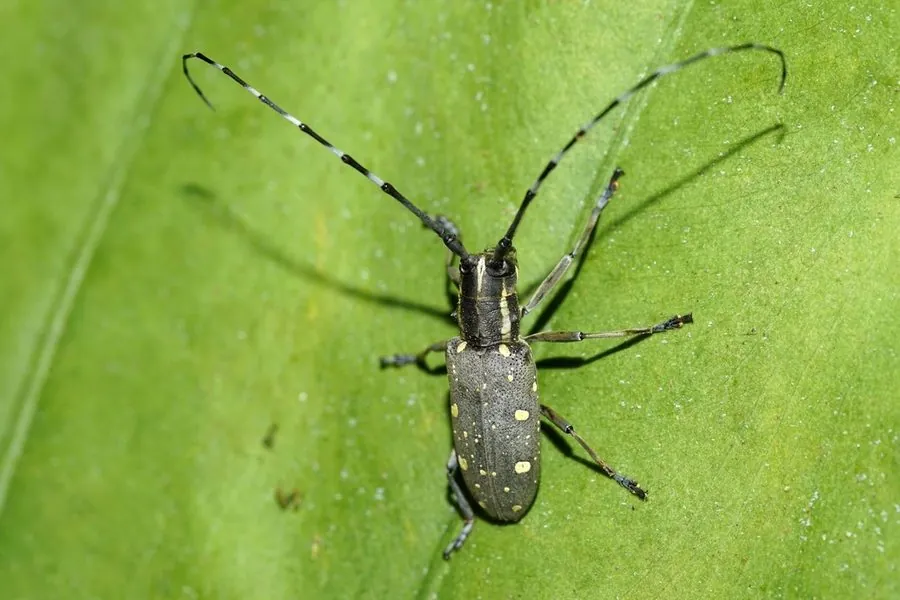

昆虫 · 动物界
黄星天牛 Psacothea hilaris

体黑褐、鞘翅上布满黄色星状斑点的天牛，幼虫蛀食桑树和无花果的枝干，是桑园和果园的重要蛀干害虫。
- 分类
- 门节肢动物门纲昆虫纲目鞘翅目科天牛科属黄星天牛属
- 栖息环境
- 桑园、无花果园和桑科植物的枝干
- 地理分布
- 中国大部分地区，以及日本、朝鲜半岛
- 保护级别
- 暂无评估
物种志
黄星天牛成虫体长 15–25 mm，体呈黑褐至黑色，鞘翅上散布许多不规则的黄色斑点，斑点在个体间变化很大。触角细长，雄虫触角约为体长的两倍，雌虫略短。
黄星天牛分布于中国、日本和朝鲜半岛，是桑树和无花果上的重要蛀干害虫。它一年发生 1 代，以幼虫在枝干内越冬，翌年春季化蛹，成虫在 5–7 月羽化。雌虫把卵产在树皮缝隙中，幼虫孵化后蛀入木质部，在枝干内钻出弯曲的虫道，并在蛀孔外排出木屑状的粪便。受害枝条生长衰弱、叶片发黄，严重时整枝枯死。防治上可剪除虫枝、用铁丝钩杀幼虫，并保护寄生蜂和啄木鸟等天敌。成虫有趋光性，夜晚可灯光诱集。
形态与习性
- 食性幼虫蛀食桑树和无花果的枝干木质部
- 体长15–25 mm
- 斑纹鞘翅散布不规则的黄色星状斑点
- 触角雄虫触角约为体长的两倍
- 危害枝干内钻出虫道，枝条枯死
- 防治剪除虫枝、钩杀幼虫、保护天敌
趣味知识
- 黄星天牛鞘翅上的黄斑大小和形状在个体间差别很大。
- 它的幼虫在枝干里钻出弯曲的虫道，蛀孔外堆着木屑状的粪便。
- 成虫在夏季羽化，常停在桑树枝叶上取食嫩皮。